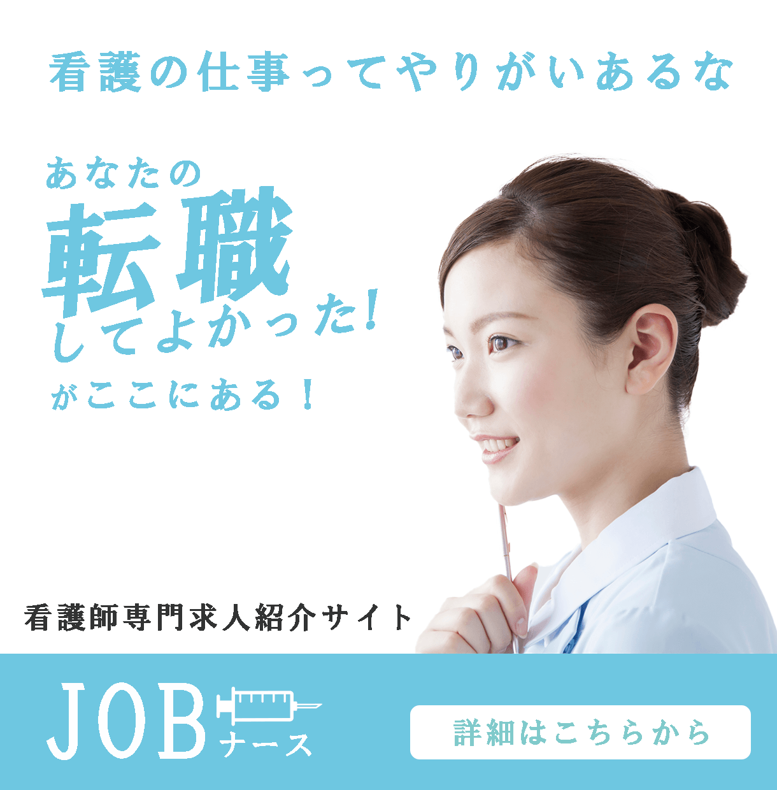
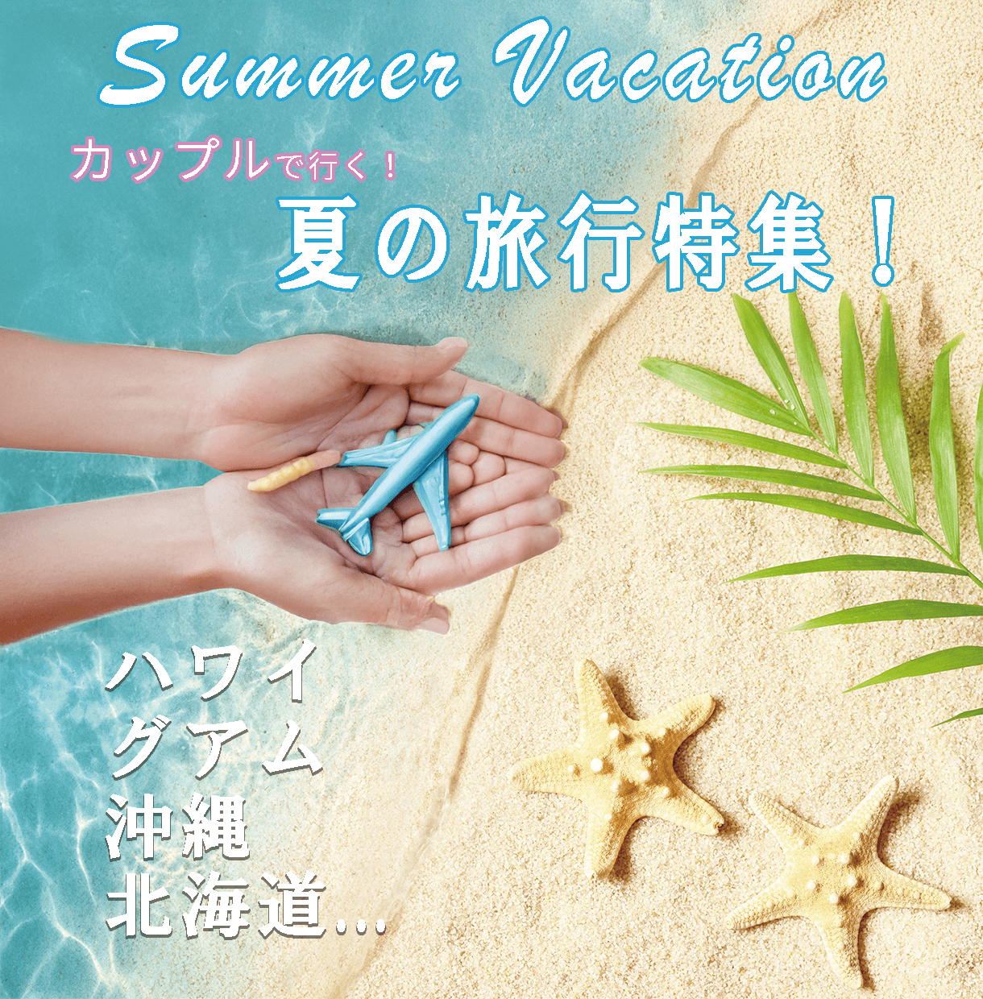
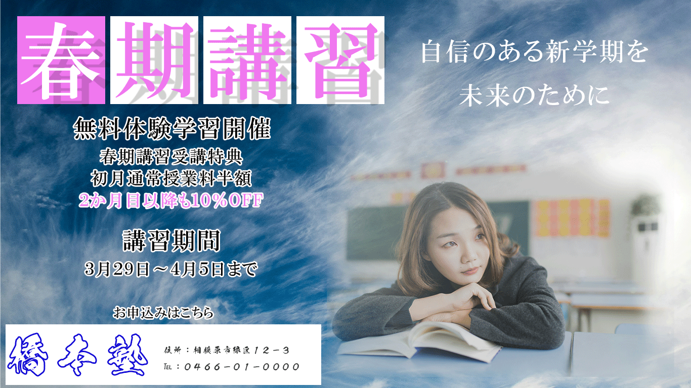

現役看護師にターゲットを絞り、医療現場のプロに信頼される「誠実さ」と「清潔感」を水色のトーンで表現。ユーザーの心理的ハードルを下げ、クリックしやすい安心感を設計しました。

「夏休み」のワクワク感を想起させる砂浜をベースに、飛行機を自ら手ですくう印象的な構図を採用。旅行を「自分のこと」としてリアルにイメージさせ、直感的なクリックを誘発させます。

中高生へのアピールはもちろん、決済権を持つ「親の心理（我が子を気にかける想い）」にアプローチ。放課後の静かな教室の描写を用いることで、新学期への期待と焦燥感に寄り添う心理的デザインです。
ただ綺麗な画像を作るのではなく、数字やコストを管理する「経営者側の目線」を忘れず、自分がクリックする側の心理的視点を意識しながら数字でだせる広告のクリック率やコンバージョンという
『成果（最適解）』から逆算したロジカルなデザインを常に心がけています。